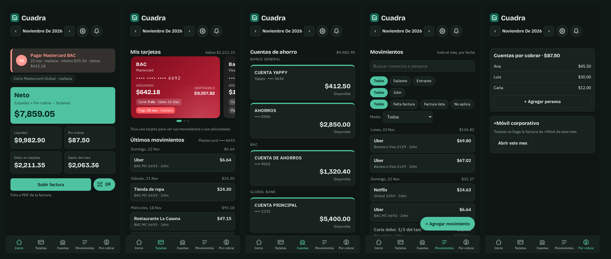

Cuadra es la app que hice para que mis cuatro bancos de Panamá me cuadren solos. Tengo cuentas y tarjetas en todos, y mi familia usa extensiones de mis tarjetas. Cada mes me preguntaba lo mismo: ¿cuánto gasté, quién me debe y por qué no me cuadran los números?
4bancos leídos cada día
2lecturas diarias, 10:00 y 18:30
116pruebas automáticas
0movimientos de banco escritos a mano
El problema
En Panamá no existe open banking para personas. Si quieres ver tus movimientos de cuatro bancos juntos, no hay API. Hay cuatro portales web distintos, cada uno con su login, su manera de mostrar los datos y sus rarezas.
Mi caso se complicaba por las tarjetas. Soy el titular de varias y otras personas de mi familia tienen extensiones. Lo que gastan en esas extensiones es una deuda conmigo. Entonces no me bastaba con saber cuánto gasté. Necesitaba saber de quién era cada compra, qué ya me pagaron y qué faltaba por cobrar.
Primer intento: un bot de WhatsApp
La primera versión fue un bot de WhatsApp. Leía los correos de aviso de cada banco, me escribía por WhatsApp para preguntar de quién era cada gasto y yo respondía con un número del 1 al 7.
Ese mensaje lo escribí el 12 de abril de 2026 y sigue siendo el corazón del flujo: «Transacción pendiente: tarjeta, monto, comercio, fecha. ¿De quién fue?», con siete opciones (yo, las personas con extensión, compartido, negocio y fraude). Antes de eso, durante 2025, lo hacía todo a mano: sumar gastos, repartir lo de un viaje entre varias personas hasta el centavo, calcular cuánto me quedaba después de pagar las tarjetas y cuánto me debían. Ninguna de esas cuentas se guardaba.
Esa primera versión corría en una PC de mi casa y la armé en tres días, del 9 al 11 de abril: leía los correos por IMAP cada minuto, los pasaba por un lector de plantillas y guardaba las transacciones. El 11 de abril la PC se dañó y no tenía copia. Perdí todo y lo volví a montar en un servidor alquilado. La lección me salió cara, y por eso Cuadra tiene respaldo diario y un manual.
Funcionó a medias. Los correos de aviso son parciales. No traen todos los movimientos ni los saldos reales. Para cuadrar de verdad había que entrar a los portales.
La versión que quedó
Lo rehice desde cero en un servidor pequeño, con reglas claras y pruebas para cada caso real. En un sistema de dinero nada se adivina. Le puse Cuadra porque su trabajo es que las cuentas cuadren. Tiene dos piezas.
flowchart LR
A[4 portales bancarios] -->|10:00 y 18:30| B[Lector con navegador]
B --> C[Conciliación]
D[QR de facturas DGI] --> C
C --> E[Cuadra: inicio, tarjetas, por cobrar]
C -->|no cuadra| F[Aviso]
El lector trae lo que dice el banco. La conciliación lo compara con lo que Cuadra tiene anotado.
El lector. Un navegador automatizado entra a los cuatro bancos dos veces al día, lee saldos y movimientos y guarda los datos. No muevo plata desde ahí. Solo mira.
La app. Muestra las tarjetas con su corte y los días que faltan para pagar, las cuentas, los movimientos y lo que me deben. Se parece a una app de banca, porque quería abrirla y entenderla sin pensar.

Inicio, tarjetas, cuentas, movimientos y por cobrar. Capturas con datos de demostración inventados.
La regla que más me costó entender
Manda la banca en línea.
Cuando lo que anota Cuadra y lo que dice el portal del banco no coinciden, el portal gana. Parece obvio, pero me tomó varias vueltas. Hay compras que el banco muestra primero como «en tránsito» y días después como cargo definitivo. Si la app trata las dos cosas como dos compras, el gasto sale duplicado.
Cada día el sistema hace un cuadre: deuda más disponible más tránsito tiene que dar el límite de la tarjeta. Si no da, me avisa. El aviso me sirvió más de una vez para descubrir un error mío.
Por qué las facturas me importan tanto
Uno de mis primeros proyectos, el de recuperar impuestos de Amazon, me enseñó que un papel puede valer plata: me devolvieron el impuesto porque tenía el documento de cada paquete. Con la declaración de renta pasa lo mismo, pero con más compras y más años.
En Panamá, la DGI permite deducir en la renta de una persona natural los gastos médicos, los gastos escolares, los intereses hipotecarios sin interés preferencial, los intereses de préstamos del IFARHU y los aportes a un fondo de jubilación privada. Los asalariados que quieren una devolución de impuestos también tienen que declarar. La fecha límite que da la DGI es el 15 de marzo, con prórroga hasta el 15 de abril, y las guías que leí coinciden en lo práctico: guarda los comprobantes de todo el año.
Ahí está el problema. Las facturas se acumulan durante meses, entre cientos de compras en varios bancos, y en marzo nadie se acuerda de cuál era de qué compra. Una factura que no aparece es plata que se queda en la mesa. Creo que esto debería importarle a cualquier panameño que declare, y casi nadie lo piensa hasta que ya es tarde. Cuadra no declara por mí ni da asesoría fiscal. Solo se encarga de que en marzo cada factura esté pegada a su compra y guardada, una carpeta por persona y por año.
Así las pega. Cada factura electrónica trae un QR y un código único, el CUFE, y la DGI deja consultarla con cualquiera de los dos. Escaneo el QR y Cuadra baja la factura de la DGI. A veces todavía no está, porque el comercio puede mandarla al final del día, así que vuelve a buscarla a las 2 horas, al día siguiente, a los 3 días, a los 7 días y a fin de mes. Con la factura en mano busca su compra: el mismo monto exacto, con fecha a más o menos tres días. Si hay una sola candidata, la pega. Si hay varias, desempata por el parecido entre el emisor y el comercio, y si aun así duda no adivina: me lo deja en «Por revisar». Los detalles están en el README.
Las facturas no mueven plata
Para declarar necesito las facturas, y en Panamá casi todas traen un QR de la DGI. Escaneo el QR y la app guarda la factura en Drive con un nombre ordenado. Después busca la transacción del banco que le corresponde: mismo monto, tres días de margen.
Una factura nunca crea una transacción. Los saldos los mueven solo los movimientos reales del banco. Esa separación evitó muchos líos de contabilidad.
Lo que me enseñó cada banco
Si haces algo parecido, estas son las trampas que me encontré. Cada banco tiene la suya.
Un banco con protección anti-bots en la portada
La solución fue entrar directo a la banca digital y no pasar por la página principal.
Otro con preguntas de seguridad que rotan
Hay que guardar las respuestas de todas las preguntas posibles y escoger la correcta según lo que aparezca.
Uno con una tarjeta que es un interruptor
Si haces clic sobre la tarjeta, la activas o la desactivas. El lector solo pasa el cursor por encima.
Uno que avisa de «sesiones activas»
Hay que confirmar el aviso antes de ver los saldos.
Un sistema que se vigila solo
Lo que más tranquilidad me da no es la pantalla bonita. Es que el sistema se revisa solo.
116 pruebas, la mayoría con casos reales. Un candado en git impide guardar cambios si alguna falla.
Avisos propios: si una lectura falla o un cuadre no da, la app lo dice.
Respaldo diario y un manual completo, probado en un servidor nuevo, para poder mudar todo en un comando.
Cambios a mano, pero con rastro
Casi nada se escribe a mano, pero a veces hace falta: en una cena de 30 dólares, 15 son de otra persona. Para eso no hay campos libres. Hay comandos fijos y probados: buscar un movimiento, registrar que alguien me debe una parte, registrar un abono, marcar un movimiento y deshacer. Cada uno hace una copia de la base antes de tocar nada y deja en una bitácora qué se pidió y cómo estaba el dato antes y después, así que cualquier cambio se puede deshacer y nunca tengo que adivinar por qué pasó algo. No inventan reglas: usan lo que la app ya tiene, un movimiento normal con una nota. Y los puedo usar desde el teléfono.
Lo que aprendí construyéndolo
Entender antes de inventar reglas. Un día agregué una regla para excluir transferencias entre mis cuentas. Estaba mal. La plata da vueltas entre mis tarjetas y el total cuadra solo. Quité la regla y quedó como regla de la casa: primero entender lo que pasa, después tocar el código.
Lo que no se anota se olvida. Cada decisión quedó escrita en un manual. Así nada depende de mi memoria y cualquiera puede retomar el sistema.
Lo hecho a mano suele ser a propósito. Si algo se ve raro, primero se pregunta. Casi siempre lo cambié yo por una razón.
Menos pantalla, más automático. Probé cosas como una nota del iPhone para anotar deudas. Se pisaba con los abonos automáticos y la saqué. Hoy lo que me deben sale solo de los movimientos.
Cómo terminó esta historia
Empezó con un bot de WhatsApp que me preguntaba de quién era cada gasto, y con una PC dañada que se llevó todo lo que no tenía copiado. Terminó, por ahora, en algo que no esperaba: ya no tengo que pensar en mis cuentas. El sistema lee los cuatro bancos dos veces al día, compara con lo que tiene anotado, me avisa cuando algo no cuadra y guarda una copia completa cada día. Si el servidor se muriera mañana, se monta otro con un solo comando. Abro la app, miro el Neto y sé que es el número real.
Lo que queda abajo ya no son arreglos. Son mejoras.
Lo que sigue
Quiero que Cuadra sugiera de quién es cada transferencia que llega, aprendiendo de las anteriores, y un resumen diario corto con alertas cuando el gasto se salga del patrón. Cuando esté probado lo cuento aquí.
El código de Cuadra está público en GitHub (licencia «todos los derechos reservados»: para verlo y aprender, no para copiarlo ni venderlo). Si te interesa usarlo o ver una demostración, escríbeme.
Hecho en Panamá. Los bancos no tienen API para personas, así que cada uno tuvo que aprenderse a mano.
November 2026 · Panama
Cuadra
Cuadra is the app I built so my four Panamanian banks reconcile themselves. I have accounts and cards at all of them, and my family uses extensions of my cards. Every month I asked myself the same thing: how much did I spend, who owes me, and why don't my numbers add up?
4banks read every day
2daily reads, 10:00 and 18:30
116automated tests
0bank transactions typed by hand
The problem
Panama has no open banking for individuals. If you want to see your transactions from four banks together, there's no API. There are four different web portals, each with its own login, its own way of showing data and its own quirks.
My case got harder because of the cards. I'm the primary holder of several, and other people in my family have extensions. What they spend on those extensions is a debt to me. So knowing how much I spent wasn't enough. I needed to know whose each purchase was, what had already been paid back and what was still owed.
First attempt: a WhatsApp bot
The first version was a WhatsApp bot. It read each bank's alert emails, messaged me on WhatsApp to ask whose each expense was, and I answered with a number from 1 to 7.
I wrote that message on April 12th, 2026, and it's still the heart of the flow: "Pending transaction: card, amount, merchant, date. Whose was it?", with seven options (me, the people with a card extension, shared, business and fraud). Before that, during 2025, I did everything by hand: adding up expenses, splitting a trip between several people down to the cent, working out what was left after paying the cards and who owed me. None of those calculations were kept.
That first version ran on a PC at home and I built it in three days, April 9th to 11th: it read the e-mails over IMAP every minute, ran them through a template reader and stored the transactions. On April 11th the PC died and I had no backup. I lost everything and set it up again on a rented server. That lesson was expensive, which is why Cuadra has a daily backup and a manual.
It half worked. Alert emails are partial. They don't include every transaction or the real balances. To truly reconcile, you had to go into the portals.
The version that stuck
I rebuilt it from scratch on a small server, with clear rules and tests for every real case. In a money system, nothing is guessed. I named it Cuadra, Spanish for "it adds up", because that's its job. It has two parts.
flowchart LR
A[4 bank portals] -->|10:00 and 18:30| B[Browser reader]
B --> C[Reconciliation]
D[DGI invoice QR codes] --> C
C --> E[Cuadra: home, cards, receivables]
C -->|doesn't add up| F[Alert]
The reader brings what the bank says. Reconciliation compares it with what Cuadra has on record.
The reader. An automated browser logs into the four banks twice a day, reads balances and transactions and saves the data. I don't move money from there. It only looks.
The app. It shows the cards with their statement date and the days left to pay, the accounts, the transactions and what I'm owed. It looks like a banking app, because I wanted to open it and understand it without thinking.
Home, cards, accounts, transactions and receivables. Screenshots use made-up demo data.
The rule that took me longest to understand
Online banking rules.
When what Cuadra has recorded and what the bank's portal says don't match, the portal wins. It sounds obvious, but it took me several rounds. Some purchases show up first as "in transit" and days later as a final charge. If the app treats them as two purchases, the expense is counted twice.
Every day the system runs a check: debt plus available plus in-transit has to equal the card's limit. If it doesn't, it warns me. That warning helped me catch my own mistakes more than once.
Why invoices matter so much to me
One of my first projects, recovering Amazon taxes, taught me that a piece of paper can be worth money: I got the tax back because I had the document for each package. The income tax return works the same way, with more purchases and more years.
In Panama, the DGI (the tax authority) lets an individual deduct medical expenses, school expenses, mortgage interest without preferential rate, IFARHU loan interest and contributions to a private retirement fund. Salaried workers who want a tax refund also have to file. The DGI's deadline is March 15, extendable to April 15, and the guides I read agree on the practical part: keep the receipts for the whole year.
That's the problem. Invoices pile up over months, among hundreds of purchases across several banks, and by March nobody remembers which one belonged to which purchase. A missing invoice is money left on the table. I think this should matter to any Panamanian who files, and almost nobody thinks about it until it's too late. Cuadra doesn't file for me and gives no tax advice. It just makes sure that in March every invoice is attached to its purchase and stored, one folder per person per year.
Here is how it attaches them. Each electronic invoice carries a QR and a unique code, the CUFE, and the DGI lets you look it up with either one. I scan the QR and Cuadra downloads the invoice from the DGI. Sometimes it isn't there yet, because the merchant may send it at the end of the day, so it checks again after 2 hours, the next day, after 3 days, after 7 days and at month end. With the invoice in hand it looks for its purchase: the exact same amount, dated within about three days. If there is one candidate, it attaches it. If there are several, it breaks the tie by how much the issuer's name resembles the merchant's, and if it still can't decide it doesn't guess: it leaves it in "To review" for me. The details are in the README.
Invoices don't move money
I need invoices for my taxes, and in Panama almost all of them carry a QR code from the DGI, the tax authority. I scan the QR and the app saves the invoice to Drive with a tidy name. Then it looks for the matching bank transaction: same amount, three days of margin.
An invoice never creates a transaction. Only real bank movements change balances. That separation saved me a lot of accounting headaches.
What each bank taught me
If you build something similar, these are the traps I found. Every bank has its own.
A bank with anti-bot protection on its home page
The fix was to go straight to online banking and skip the main page.
Another with rotating security questions
You have to store answers for every possible question and pick the right one based on what appears.
One whose card is a switch
If you click the card, you turn it on or off. The reader only hovers over it.
One that warns about "active sessions"
You have to confirm the warning before you can see the balances.
A system that watches itself
What gives me the most peace of mind isn't the pretty screen. It's that the system checks itself.
116 tests, most of them with real cases. A git lock blocks saving changes if any of them fails.
Its own alerts: if a read fails or a check doesn't add up, the app says so.
Daily backup and a complete manual, tested on a fresh server, so everything can move with one command.
Changes by hand, but with a trail
Almost nothing is typed by hand, but sometimes it's needed: of a 30-dollar dinner, 15 belong to someone else. For that there are no free-form fields. There are fixed, tested commands: find a movement, record that someone owes me a share, record a payment, mark a movement and undo. Each one makes a copy of the database before touching anything and leaves in a log what was asked and how the data looked before and after, so any change can be undone and I never have to guess why something happened. They don't invent rules: they use what the app already has, a normal movement with a note. And I can use them from my phone.
What I learned building it
Understand before inventing rules. One day I added a rule to exclude transfers between my accounts. It was wrong. Money moves around between my cards and the total adds up on its own. I removed it and it became a house rule: first understand what's happening, then touch the code.
What isn't written down gets forgotten. Every decision was written into a manual. That way nothing depends on my memory and anyone can pick the system up.
What was done by hand is usually on purpose. If something looks odd, ask first. Almost always I changed it myself for a reason.
Less screen, more automatic. I tried things like an iPhone note to track debts. It clashed with automatic payments and I dropped it. Today what I'm owed comes straight from the transactions.
How this story ended
It started with a WhatsApp bot that asked me who each expense belonged to, and with a broken PC that took everything I hadn't copied. For now it ended somewhere I didn't expect: I no longer have to think about my accounts. The system reads the four banks twice a day, compares them with what it has recorded, warns me when something doesn't add up, and keeps a full copy every day. If the server died tomorrow, another one goes up with a single command. I open the app, look at the Net figure, and know it's the real number.
What's left below isn't fixes anymore. It's improvements.
What's next
I want Cuadra to suggest who each incoming transfer is from, learning from past ones, plus a short daily summary with alerts when spending breaks the pattern. Once it's proven, I'll write about it here.
Cuadra's code is public on GitHub ("all rights reserved" license: to read and learn from, not to copy or sell). If you'd like to use it or see a demo, write to me.
Made in Panama. The banks have no API for individuals, so each one had to be learned by hand.